Section 6.3: Describing the Binomial Distribution
Learning Objectives
1.Find the mean of a binomial random variable.
2.Find the standard deviation of a binomial random variable.
3.Determine when a binomial random variable will have an approximately bell-shaped distribution.
Recall that we describe probability distributions using three criteria:
•Center- based on the probability distribution, what is the most typical or expected outcome?
•Variation- how much will the outcomes in the probability distribution vary?
•Shape of the distribution- is the probability histogram skewed or bell-shaped?
In section 6.1 we found formulas for the mean to describe the center and standard deviation to describe variation for discrete random variables when we had a full distribution listed as a table.
The mean:
The standard deviation:
We also used probability histograms to describe the shape of the distribution. In this section, we will find shortcut formulas for the mean, standard deviation, and shape of the distribution, that we can use when we work with binomial random variables.
The Mean and Standard Deviation of a Binomial Random Variable
Recall these facts about the binomial random variable from section 6.2.
Summary of Binomial Experiments and Probability
A binomial experiment is an experiment in which
1.There are a fixed number of trials, n.
2.There are two possible outcomes in each trial, called “success” and “failure”.
3.The probability of a successful outcome p is the same for each trial.
4.The trials are independent.
The probability of getting exactly x successes in n trials is given by
The probability formula is presented here but you can avoid it by using technology.
Example 1: Create a Discrete Probability Distribution and Find the Mean
According to the National Pet Owners Survey conducted by the American Pet Products Association in 2019-2020, 38.4% of U.S. households own a dog. Assume that 6 U.S. households are randomly selected and let X = the number of households that own a dog.
a)Why is this a binomial experiment?
b)Make a probability distribution for X.
c)Use the formula for the mean given in section 6.1 to find the mean number of households that own a dog.
Solution:a)Since X = the number of households with dogs out of the 6 randomly selected, X is a discrete random variable.
1. Six homes are randomly selected, so there are a fixed number of trials, n = 6.
Six homes are randomly selected, so there are a fixed number of trials, n = 6.
2.Each household either owns a dog or does not own a dog, so there are two possible outcomes.
3.The probability of a household owning a dog is p = 0.384 and it is the same for any randomly selected household.
4.There are only 6 households selected, which is far less than 5% of the number of households in the U.S., so we can assume the selections are independent.
So, X = the number of households that own a dog is a binomial random variable. 
b)To make a probability distribution for X, we will need to fill in Table 11 with the probability for each possible value of X. The possible values for X are 0, 1, 2, 3, 4, 5, or 6.
Table 11: The Number of Households with Dogs | |
|---|---|
X = Number of Households | Probability |
0 | |
1 | |
2 | |
3 | |
4 | |
5 | |
6 | |
The probability that a household owns a dog is p = 0.384, and the probability that a household does not own a dog is 1 – p = 1 – 0.384 = 0.616. We will use the binomial probability formula for X = 0 and X = 1 for practice, then use STATBELT to find the remaining probabilities.
The probability that X = 0 is
The probability that X = 1 is
While you can continue to use the binomial probability formula, we will use STATBELT to compute the remaining probabilities and complete the table, shown in Table 11.
For example, to compute the probability that X = 2, we select Calculators → Binomial Calculator, then set n = 6 and p = 0.384. Choosing P(X = x) under “Find” and typing 2 for the x value, we get
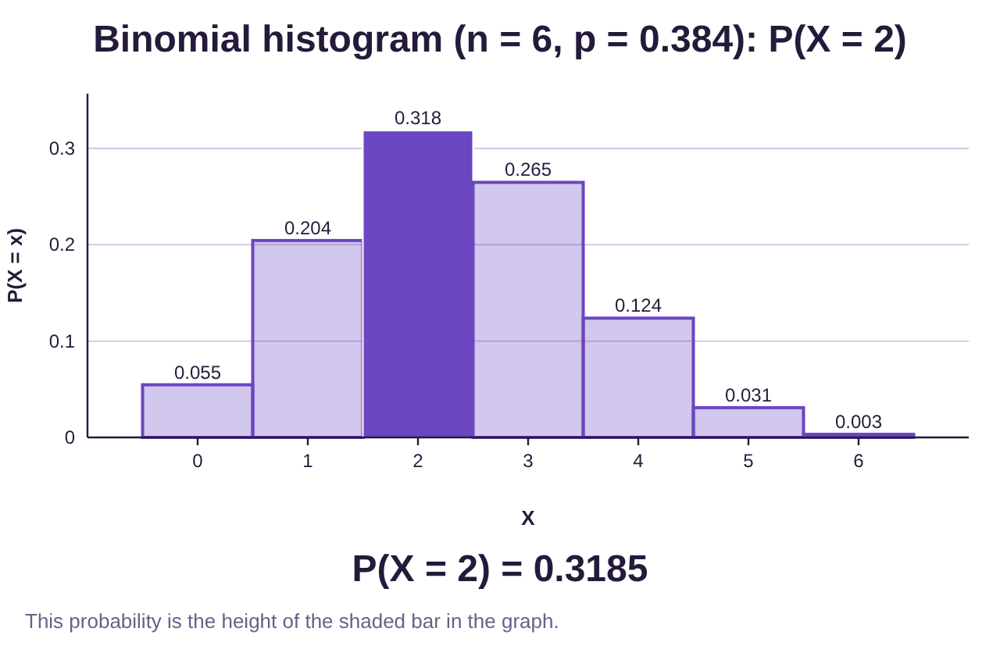
Table 11 contains all the probabilities calculated this way, rounded to 4 decimal places.
Table 11: The Number of Households with Dogs | |
|---|---|
X = Number of Households | Probability |
0 | 0.0546 |
1 | 0.2044 |
2 | 0.3185 |
3 | 0.2647 |
4 | 0.1238 |
5 | 0.0309 |
6 | 0.0032 |
1.0001 | |
c)In section 6.1, we saw the formula for the mean value for a discrete random variable X,
So, the mean value, or expected value, for the number of households that own a dog can be found by multiplying each X by its probability, then adding the products.
Table 11: The Number of Households with Dogs | ||
|---|---|---|
X = Number of Households | Probability |
|
0 | 0.0546 | 0.0000 |
1 | 0.2044 | 0.2044 |
2 | 0.3185 | 0.6370 |
3 | 0.2647 | 0.7941 |
4 | 0.1238 | 0.4952 |
5 | 0.0309 | 0.1545 |
6 | 0.0032 | 0.0192 |
1.0001 | 2.3044 | |
The mean, or expected value, is approximately 2.3. That tells us that on average, 2.3 out of every six randomly selected households will own a dog.
That was a great review of parts of sections 6.1 and 6.2. But this section promised shortcut formulas! How can we find the mean without having to create the probability distribution table?
Consider this: What if we were randomly selecting n = 100 U.S. households instead of 6? If 38.4% of households own dogs, how many do you expect out of 100 to own dogs? Wouldn’t that be 38.4, since 38.4% means 38.4 per 100? Is it that simple? The answer is yes!
If we know that 38.4% of households own dogs, and we take a random sample of 6 households, we expect that about 38.4% of the six households will be dog owners.
So, we would expect about 2.3 to own dogs, and we found it without needing the entire distribution!
Similarly, there is a shortcut formula for the standard deviation. The two shortcut formulas are given here.
The Mean and Standard Deviation of a Binomial Random Variable
If X is a binomial random variable with a fixed number of trials n and probability of success in each trial
p, then
1.The mean of X is
2.The standard deviation of X is
Example 2: Verify the Standard Deviation Formula
Use the probability distribution from example 1 to find the standard deviation of X, the number of households that own dogs, using the formula from section 6.1. Verify that the shortcut formula gives the same answer.
Solution:The formula for the standard deviation for a discrete random variable that we saw in section 6.1 is
So, we will add columns to Table 11 for and and carry out the computations.
Table 11: The Number of Households with Dogs | ||||
|---|---|---|---|---|
X = Number of Households | Probability |
|
| |
0 | 0.0546 | 0.0000 | 0 | 0.0000 |
1 | 0.2044 | 0.2044 | 1 | 0.2044 |
2 | 0.3185 | 0.6370 | 4 | 1.2740 |
3 | 0.2647 | 0.7941 | 9 | 2.3823 |
4 | 0.1238 | 0.4952 | 16 | 1.9808 |
5 | 0.0309 | 0.1545 | 25 | 0.7725 |
6 | 0.0032 | 0.0192 | 36 | 0.1152 |
1.0001 | 2.3044 | 6.7292 | ||
We already found and now get .
Substituting these values into the standard deviation formula gives us
The shortcut formula tells us that . In this case, n = 6 and p = 0.384, so the shortcut formula gives . Following the order of operations, that gives us
As expected, the result is the same! This allows us to find the mean and standard deviation of any binomial random variable without needing to work from the entire distribution!

Important Point!
The shortcut formulas just presented for finding the mean and standard deviation apply ONLY to binomial random variables! to find the mean and standard deviation for binomial random variables. If the variable is not binomial, you cannot use these shortcuts! For non-binomial work, you must still use the two formulas presented in section 6.1.
Example 3: Finding the Mean and Standard Deviation
Stephen Curry of the Golden State Warriors makes 91% of his free throw attempts in basketball games. Assume he takes 20 free throw attempts. Further, assume that his attempts are independent of each other. Let X = the number of free throws he makes out of the 20 attempts.
a)Why is this a binomial experiment?
b)Find the mean and standard deviation for the number of free throws he will make.
Solution:a)Since X = the number of made free throws out of 20 attempts, X is a discrete random variable.
1.There are a fixed number of trials, n = 20 free throw attempts.
2.There are two possible outcomes, he will either make the shot or miss it.
3.The probability of making a free throw is p = 0.91 and it is the same for each attempt.
4.We are told to treat his attempts as independent.
So, X = the number made free throws out of 20 is a binomial random variable.
b)Because X is binomial, we can use the shortcut formulas for the mean and standard deviation.
In this case, n = 20 free throw attempts, and the probability for success is p = 0.91.

Photo by Markus Spiske (opens in a new tab) on Unsplash (opens in a new tab)
The mean is . So, you should expect him to make 18.2 free throws for each 20 attempts, on average.
The standard deviation is
We expect Steph Curry will make 18.2 free throws on average for every 20 attempts he makes, with a standard deviation of 1.28. Realistically, this says he generally will make 17, 18, or 19 out of 20 attempts. He’s very good!
Note that you could have created a table with all the probabilities for the entire distribution of Steph Curry’s 20 free throws. You would have to use the Binomial Probability Formula (section 6.2) repeatedly to find them all, then fill in the table. You could then check that the original formulas from section 6.1 give the same solutions. But that is much more work!
The Shape of the Binomial Distribution
As you may recall, we prefer to use the mean and standard deviation when data (now probability distributions as well) are bell-shaped. As a result, it is important to know when a binomial probability distribution is bell-shaped. If we look at the probability histogram from the last example, it looks to be skewed to the left. See figure 6.12.
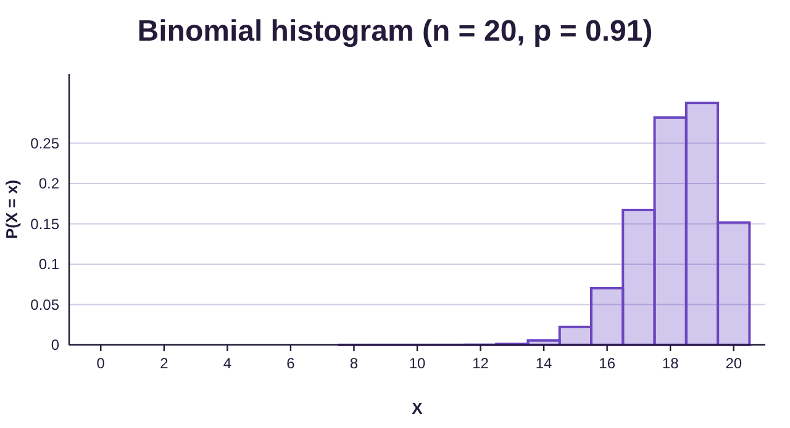
Figure 6.12: Probability histogram for Steph Curry free throw attempts.
Because the probability of Steph Curry making a shot is high, the probability is higher for greater numbers of made free throws. It is much less likely that he misses many shots, and so the probability histogram is skewed to the left.
Is there a way that we can predict when the probability histogram will be bell-shaped, without having to create the whole distribution to at the histogram? Consider the following situations.
In figure 6.13, the probability histogram appears to be bell shaped with n = 10 and p = 0.5. But the distribution in figure 6.14 looks skewed right with p = 0.15 and figure 6.15 look skewed left with p = 0.9.
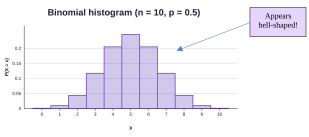
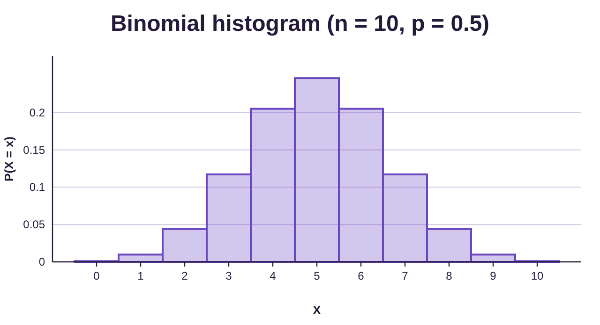
Figure 6.13: Probability histogram for binomial X with n = 10 and p = 0.5.
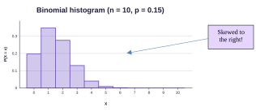
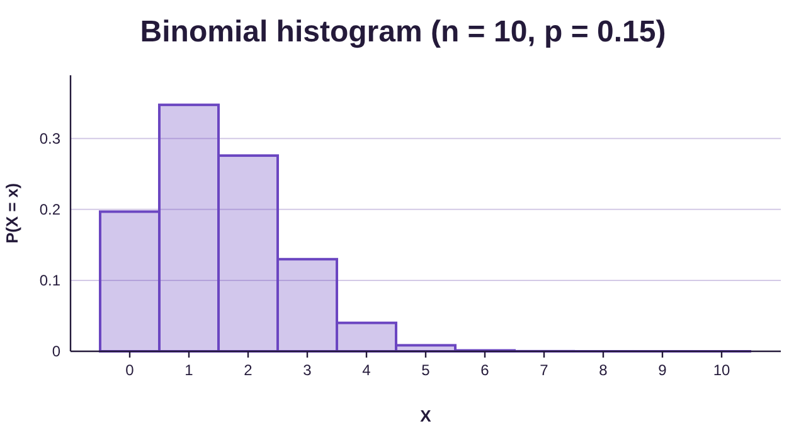
Figure 6.14: Probability histogram for binomial X with n = 10 and p = 0.15.
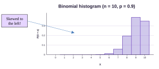
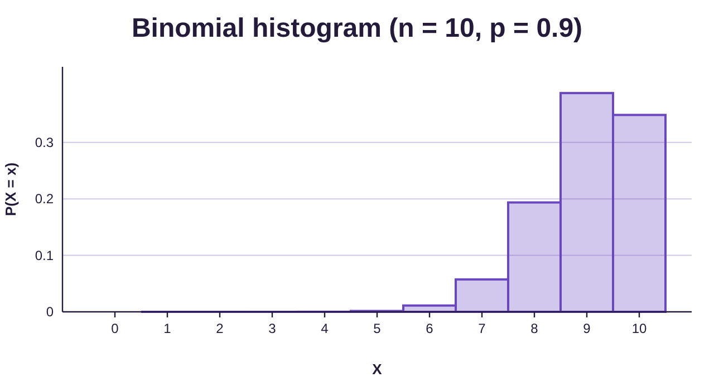
Figure 6.15: Probability histogram for binomial X with n = 10 and p = 0.9.
So, it appears that the value of p has something to do with how the probability histogram is shaped. If p is close to 0.5, the probability histogram is more symmetric and looks bell shaped. If p is closer to 0, it looks skewed right and if p is closer to 1, it appears skewed left. But there is more to the story! Watch what happens when we increase the size of the fixed number of trials n.
In figure 6.16 the size of n is increased to 50, and p = 0.9 is the same as in figure 6.15. Notice that the probability histogram looks much more bell-shaped. We increase n to 100 in figure 6.17, and again the probability histogram looks even closer to bell-shaped. Finally, in figure 6.18, the histogram appears perfectly bell-shaped with n = 125.
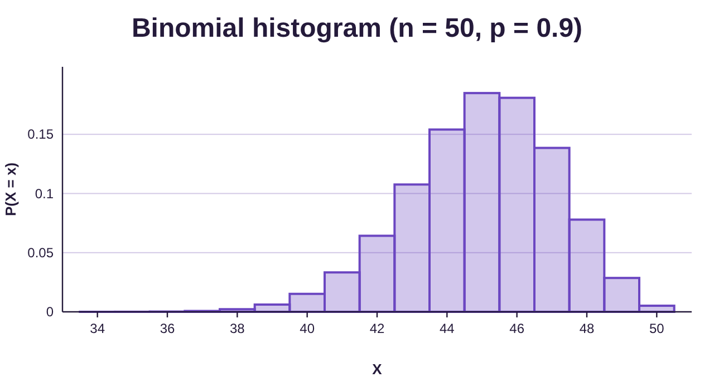
Figure 6.16: Probability histogram for binomial X with n = 50 and p = 0.9.
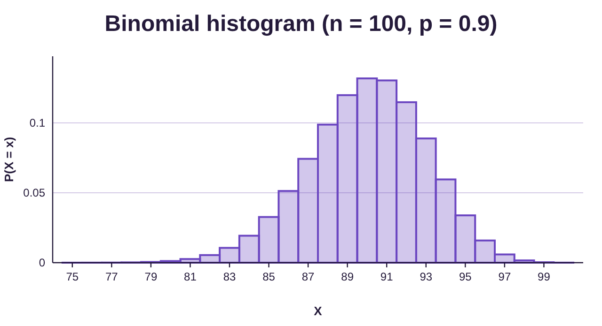
Figure 6.17: Probability histogram for binomial X with n = 100 and p = 0.9.
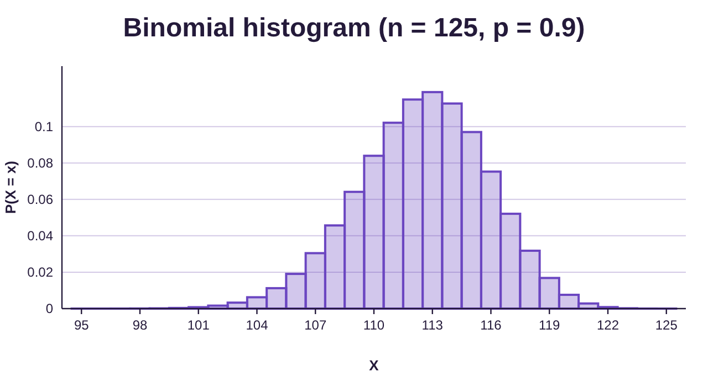
Figure 6.18: Probability histogram for binomial X with n = 125 and p = 0.9.
What this means is that we can use the number of trials n and the probability of success p to determine when a binomial random variable will have a bell-shaped probability histogram. Essentially, the closer p is to 0.5 and the larger n is, the more likely the probability histogram is bell-shaped.
Determining when a distribution is “close enough to bell-shaped” is subjective. Because of that, there are different methods that are used to determine when a binomial variable has a bell-shaped distribution, but they all use the number of trials n and the probability of success p. The method presented here is a conservative approach.
The Shape of a Binomial Distribution
If X is a binomial random variable with a fixed number of trials n and probability of success in each trial
p, then the probability histogram will be considered bell-shaped if
Note that is the variance of the discrete random variable. This fact is not important to the way we use it, but it may be interesting to some.
Let’s see how this formula works when we compare it to what we saw in the last four probability histograms using p = 0.9.
n = 10 gives
The probability histogram is not guaranteed to be bell-shaped by the formula. This is confirmed by the histogram we viewed previously which is skewed left.
n = 50 gives
Again, the probability histogram is not guaranteed to be bell-shaped by the formula, although the histogram shows it is getting closer to bell-shaped.
n = 100 gives
So, once again, the probability histogram is not guaranteed to be bell-shaped by the formula. But note how much closer it is getting to being bell-shaped.
n = 125 gives
Because the variance is larger than 10, the probability histogram is bell-shaped! We can confirm this fact by looking at the histogram at right.
Summary- Descriptions of a Binomial Random Variable
If X is a binomial random variable with a fixed number of trials n and probability of success in each trial
p, then the probability distribution for X can be described as follows.
1.Center- The mean of X is:
2.Variation- The standard deviation of X is:
3.Shape- The probability distribution will be bell-shaped if
Example 4: Describing a Binomial Random Variable
A student forgot to study for a 100-question multiple choice test. Each question has 4 possible answers, a, b, c, or d. The student has decided to randomly guess the answer to each question. Let X = the number of answers that they guess correctly.
a)Why is this a binomial experiment?
b)Describe the distribution in terms of center, variation, and shape.
Solution:a)Since X = the number of correct answers, X is a discrete random variable.
1.There are a fixed number of trials, n = 100 questions.
2.There are two possible outcomes, they will either guess right or wrong.
3.The probability of guessing right is and it is the same for each question.
4.Random guesses are independent of each other.
So, X = the number of correct answers out of 100 is a binomial random variable.
b)The fixed number of trials is n = 100 and the probability of success is . The mean of the probability distribution is
The standard deviation is
To determine the shape, we check to see if . But we already found this when we computed the standard deviation.
Since , we know that the probability distribution is bell-shaped. To summarize:
•Center- The mean is 25.
•Variation- The standard deviation is approximately 4.3.
•Shape- The probability distribution is bell-shaped.
Typical Versus Unusual Results
Recall the empirical rule for bell shaped data, first discussed in section 3.2.
The Empirical Rule for Bell-shaped Data
For any data set or distribution that is approximately bell-shaped,
•About 68% of the observations will lie within one standard deviations of the mean.
•About 95% of the observations will lie within two standard deviations of the mean.
•About 99.7% of the observations will lie within three standard deviations of the mean.
See figure 6.19.
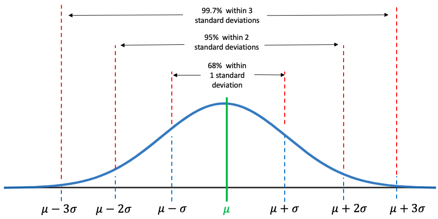
Figure 6.19: The Empirical Rule.
Recall that 95% of data are within two standard deviations of the mean. This idea can be extended to probability distributions for binomial variables that are bell-shaped. When a binomial distribution is bell shaped, there is a 95% probability that the value of the binomial random variable X will be within two standard deviations of the mean.
The complement is that when the distribution is bell-shaped, there is a 5% chance that the result of a binomial experiment will be more than two standard deviations from the mean. Recall that a result is considered unusual if it has less than a 5% chance of occurring. So, it is unusual if the result of a binomial experiment is more than two standard deviations from the mean. We interpret this as “typical results” are within two standard deviations and “unusual results” are not within two standard deviations of the mean of the binomial variable.
Definition 1: Range of Typical Values for a Binomial Experiment
If X is a binomial random variable that has a bell-shaped probability distribution, then 95% of the time, X will be within 2 standard deviations of the mean. That is, 95% of the time, X will be between the lower fence and upper fence given as:
The lower fence is
The upper fence is
Values of X that are between the fences are considered typical. Values of X that are not between the fences are unusual (unusually high or unusually low) because there is less than a 5% chance they occur.
Example 5: Range of Typical Correct Guesses
In example 4, the student forgot to study for a 100-question multiple choice test and decided to randomly guess each answer. The probability for guessing correctly is p = 0.25. Let X = the number of correct answers that they will guess correctly. For students who are guessing, what are the typical scores you would expect to see? Is it likely that someone who scored 58 was guessing?
Solution:In example 4, we found the following:
•Center- The mean is 25.
•Variation- The standard deviation is approximately 4.3.
•Shape- The probability distribution is bell-shaped.
Because the distribution is bell-shaped, we can compute the lower and upper fence for typical results when guessing the answers.
So, we expect students who guess at all the answers to get somewhere between 16.4 and 33.6 correct. Out of 100 questions, that means the scores for guessing students are between 17 and 33, which is not generally a passing grade. (Please study!)
A score above 33.6 would be considered unusual for students who are guessing all the answers. So, if a student scored 58, they had likely studied and were not randomly guessing. See figure 6.20.
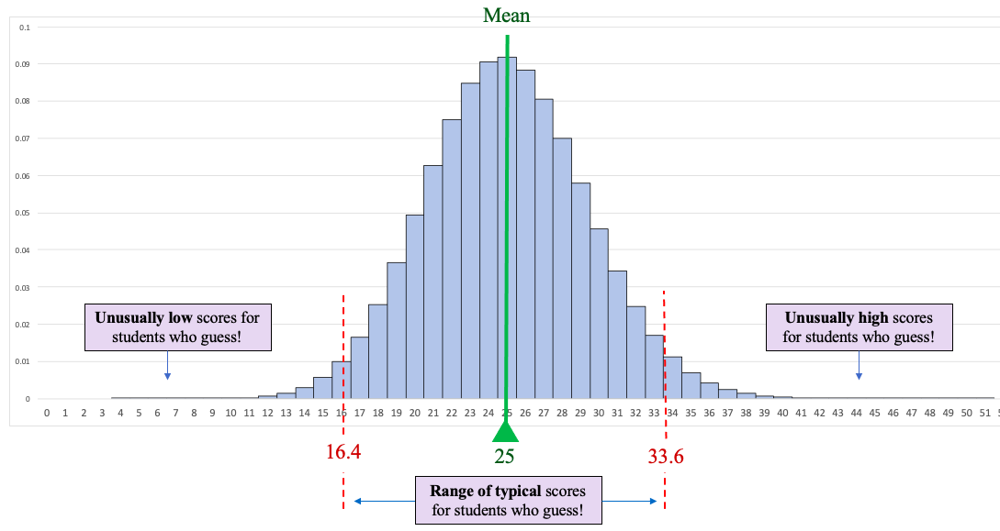
Figure 6.20: Range of typical results for guessing on a 100 point multiple choice test.
Example 6: Binomial Probability
Blissco Family Fun Products (not a real company) is a large company that has been accused of racial discrimination in its hiring practice. An advocacy group has learned that of the last 48 people hired, only 7 are persons of color. Further, the advocacy group has studied the applicants and noted that 32% were persons of color who were at least as well qualified as the white applicants. Assuming the probability that a person of color is hired is , describe the discrete random variable X = the number of persons of color hired. How many persons of color would typically be hired out of 48?
Solution:In section 6.2 we addressed the probability of Blissco hiring 7 or fewer persons of color. Here we want to describe the probability distribution.
To start, note that we have n = 48, and p = 0.32.
Center- The mean of the probability distribution is
We would expect an average of about 15 persons of color hired out of groups of 48 hires.
Variation- The standard deviation is
Shape- To determine the shape, we check to see if .
So, the probability histogram is bell shaped.
To summarize:
•Center- The mean is 15.36.
•Variation- The standard deviation is approximately 3.2.
•Shape- The probability distribution is bell-shaped.
Because the binomial random variable is bell shaped, we can compute the fences for typical results.
So, we would expect a company hiring 48 individuals with the applicant pool as described to hire between 8.96 and 21.76 persons of color. (Because we can’t have fractional people, that really means that they should have hired between 9 and 21 persons of color, inclusive.) If their hiring was non-discriminatory, we would expect between 9 and 21 persons of color hired out of each group of 48 hires, with an average of around 15. Hiring only 7 is unusually low and is evidence that they are discriminating against non-white applicants.
In example 6 of section 6.2 we showed that the probability of hiring 7 or fewer persons of color under non-discriminatory conditions was approximately 0.5% chance. Taken together, we can say that Blissco’s hiring practices have produced a highly unusual result if they are not discriminating against people of color. It is more likely they are discriminating.
NOTE: The phrase “bell-shaped” is used both informally and formally in this book. It is unlikely that the distinction would cause confusion, but I will describe the usages here for clarity.
Informally, we use the term “bell-shaped” to describe the shape of a histogram. When we note that a histogram is approximately bell-shaped, we mean that it has a “mound shape” in the middle and tails off symmetrically on both sides. In this case, we are merely commenting on the shape in a vague way. There are many histograms that we describe as being bell-shaped that are not “perfectly” bell-shaped.
Other times, “bell-shaped” has a more specific meaning. For example, the empirical rule for bell-shaped data (section 3.2) assumes that the bell-shape is specifically determined by the mean and standard deviation of the distribution. It is not a vague description in this case. It is a very specific one. A perfectly bell shaped curve that is determined by its mean and standard deviation is called a Normal curve. In the next chapter we will study these curves and use them in subsequent chapters for making inferences.
When we test a binomial distribution to determine if it is bell-shaped, we are formally comparing it to a normal curve. If the binomial distribution passes the test, with , then the binomial distribution is very close to a normal curve, and we call it “bell-shaped.” This allows us to apply probability and inference for normal distributions to the binomial situation, which can save time.
Finally, many people (including the author) tend to use the phrase “bell-shaped” synonymously with “normal”, but that is a slight abuse. Every normal distribution is bell shaped, but there are other bell-shaped distributions that are not exactly normal. It’s like squares and rectangles. Every square is a rectangle, but there are rectangles that are not squares. That said, if you think of the phrase “bell-shaped” as meaning “normal” throughout the remainder of the book, it is unlikely you will be making a serious mistake.
On to chapter 7 and continuous random variables!
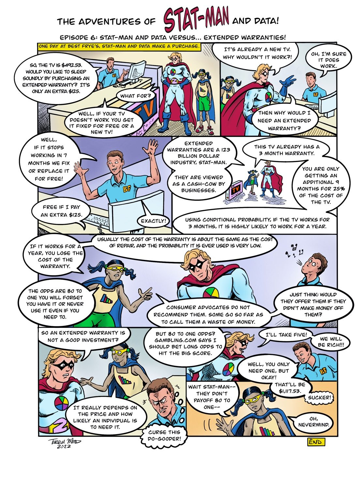
Text version of the comic
The Adventures of Stat-Man and Data! Episode 6: Stat-Man and Data versus… Extended Warranties!
Caption: One day at Best Frye’s, Stat-Man and Data make a purchase.
A clerk in a Best Frye’s shirt stands behind a counter with a computer. Stat-Man and Data stand at the counter beside a TV box.
Clerk: So, the TV is $492.53. Would you like to sleep soundly by purchasing an extended warranty? It’s only an extra $125.
Stat-Man: What for?
Clerk: Well, if your TV doesn’t work you get it fixed for free or a new TV!
Stat-Man: It’s already a new TV. Why wouldn’t it work?!
Clerk: Oh, I’m sure it does work.
Stat-Man: Then why would I need an extended warranty?
The clerk throws his hands up.
Clerk: Well, if it stops working in 7 months we fix or replace it for free!
Stat-Man: Free if I pay an extra $125.
Clerk: Exactly!
Data and Stat-Man stand beside the TV box.
Data: Extended warranties are a 123 billion dollar industry, Stat-Man.
Data: They are viewed as a cash-cow by businesses.
Data: This TV already has a 3 month warranty.
Data: You are only getting an additional 9 months for 25% of the cost of the TV.
Data: Using conditional probability, if the TV works for 3 months, it is highly likely to work for a year.
Data: If it works for a year, you lose the cost of the warranty.
Data: Usually the cost of the warranty is about the same as the cost of repair, and the probability it is ever used is very low.
Data: The odds are 80 to one you will forget you have it or never use it even if you need to.
Data: Consumer advocates do not recommend them. Some go so far as to call them a waste of money.
Data: Just think: would they offer them if they didn’t make money off them?
The clerk looks away and whistles.
Stat-Man: So an extended warranty is not a good investment?
Data: It really depends on the price and how likely an individual is to need it.
Clerk (thinking): Curse this do-gooder!
Stat-Man: But 80 to one odds? Gambling.com says I should bet long odds to hit the big score.
Stat-Man: I’ll take five!
Stat-Man: We will be rich!!!
Clerk: Well, you only need one, but okay!
Clerk: That’ll be $1,117.53.
Clerk (whispering): Sucker!
Data: Wait Stat-Man-- they don’t payoff 80 to one--
Data: Oh, nevermind.
END (Signed Terrill Mead, 2022)